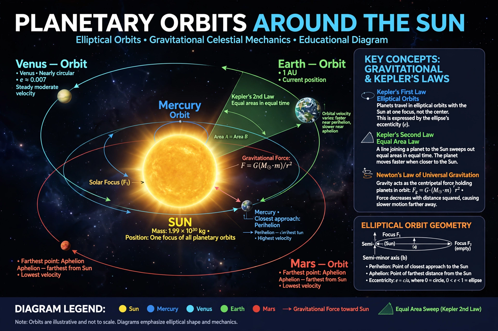

Celestial mechanicsCelestial mechanics is the branch of astronomy that deals with the motions of objects in outer space. Historically, celestial mechanics applies principles of physics (classical mechanics) to astronomical objects, such as stars and planets, to produce ephemeris data.
Johannes Kepler formulated his laws of planetary motion from Tycho Brahe's observations; Isaac Newton explained them with universal gravitation in the Principia (1687). In the 18th and 19th centuries Lagrange and Laplace developed perturbation theory, predicting phenomena such as the stability (to first order) of the Solar System, while anomalies in Uranus's orbit led Le Verrier and Adams to predict Neptune (1846).
The two-body problem is exactly solvable, yielding conic-section orbits. The n-body problem for n ≥ 3 has no general closed-form solution; Henri Poincaré's work on the three-body problem revealed deterministic chaos and founded dynamical systems theory. Modern celestial mechanics uses numerical integration, treats relativistic corrections (e.g. Mercury's perihelion precession, explained by general relativity) and underpins spacecraft navigation, asteroid hazard assessment and exoplanet dynamics.